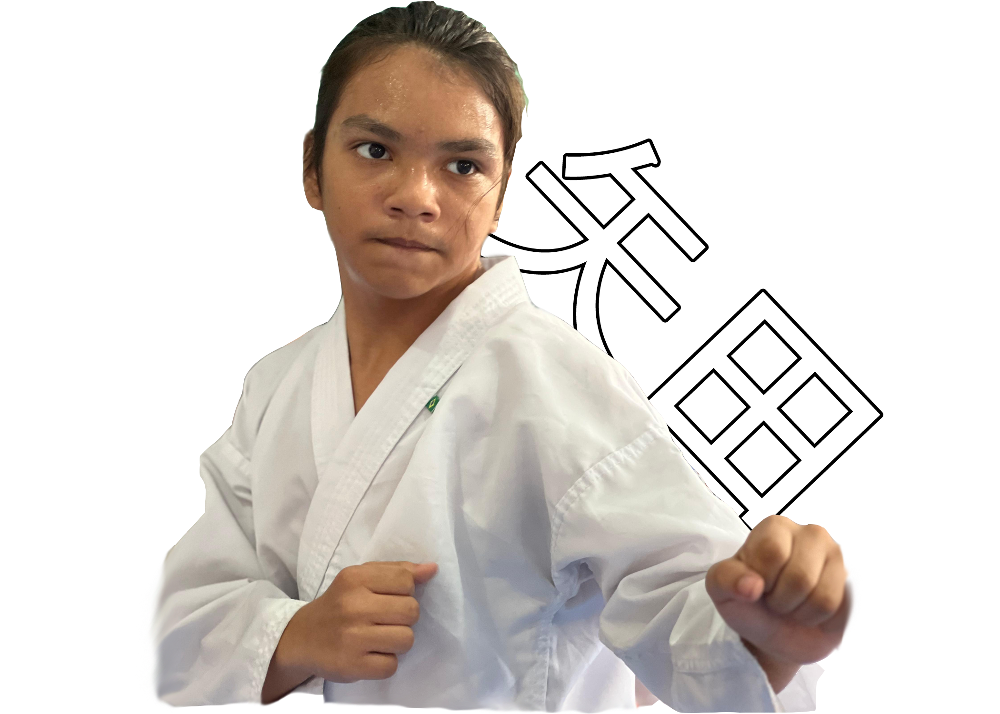

YADA (矢田)
矢 (ya): Significa "flecha".
田 (ta): Significa "campo de arroz" ou "campo". Portanto, o nome Yada pode ser interpretado como algo relacionado a um "campo de flechas".
Também é uma expressão japonesa que pode ser usada para expressar raiva de forma sutil, para indicar rejeição, desgosto ou resistência a algo.
Nossa família: camponeses ou guerrilheiros?
Uma família asiática nordestina!